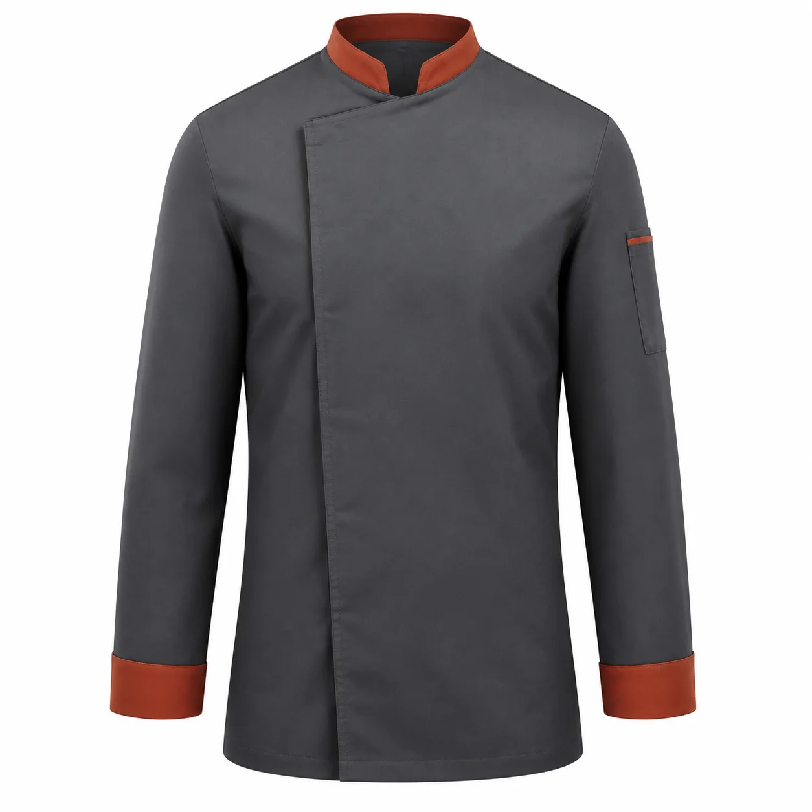

Antrasit Kiremit Asimetrik Şef Ceketi
Antrasit gövdeyi kiremit renkli yaka ve manşet biyeleriyle tamamlayan asimetrik şef ceketidir. Gizli kapama ve kol kalem cebi profesyonel mutfak kullanımına düzenli bir görünüm kazandırır.

Antrasit Kiremit Asimetrik Şef Ceketi üretim ayrıntıları
Antrasit Kiremit Asimetrik Şef Ceketi, kurumsal ekiplerde görev işlevi ve düzenli görünümü bir araya getirmek üzere planlanan aşçı kıyafetleri ve önlükler modellerindendir. Antrasit | Kiremit yaka ve manşet | Asimetrik kapama | Uzun kol | Kalem cebi özellikleri modelin temel çerçevesini oluşturur.
Malzeme seçimi kolay bakımlı dokuma kumaş üzerinden; çalışma ortamı, vardiya süresi, hareket ve bakım düzeni dikkate alınarak yapılır. Dikiş, cep ve kapama noktaları numunede kontrol edilir.
Logo ölçüsü ve konumu kumaş yüzeyiyle birlikte değerlendirilir. Onaylanan nakış veya baskı uygulaması model koduna bağlanarak tekrar sipariş standardı korunur.
Adet, beden dağılımı, renk, teslimat noktası ve hedef tarih yazılı paylaşıldığında kumaş ve üretim planı netleştirilir. Seri üretim yalnız onaylanan kapsam üzerinden ilerler.
Model özellikleri
- Antrasit
- Kiremit yaka ve manşet
- Asimetrik kapama
- Uzun kol
- Kalem cebi
Benzer ürünler
Gri Lacivert Robalı Teknik İş Önlüğü
KT-ON-022 kodlu kurumsal üretim modelini inceleyin.
Ürün detayına gidin →Petrol Antrasit Panelli Teknik İş Önlüğü
KT-ON-023 kodlu kurumsal üretim modelini inceleyin.
Ürün detayına gidin →Siyah Boyundan Askılı Mutfak Önlüğü
KT-ON-020 kodlu kurumsal üretim modelini inceleyin.
Ürün detayına gidin →İlgili seçim ve bakım rehberleri
İş Önlüğü Seçim Rehberi
Kullanım, seçim ve bakım ayrıntılarını inceleyin.
Rehbere gidin →Aşçı Ceketi Seçim Rehberi: Kumaş, Kapama ve Mutfak Konforu
Kullanım, seçim ve bakım ayrıntılarını inceleyin.
Rehbere gidin →Nakış mı, Baskı mı? İş Kıyafetlerinde Doğru Logo Uygulaması Nasıl Seçilir?
Kullanım, seçim ve bakım ayrıntılarını inceleyin.
Rehbere gidin →Sık sorulan sorular
Minimum sipariş kaç adettir?
Bu modelde özel üretim minimum siparişi 50 adettir.
Logo uygulanabilir mi?
Kumaşa göre nakış, DTF, transfer veya serigrafi uygulanabilir.
Farklı renk üretilebilir mi?
Kumaş ve aksesuar uygunluğuna göre kurumsal renk planlanabilir.
Numune hazırlanabilir mi?
Proje kapsamına göre seri üretim öncesinde numune hazırlanabilir.
Beden dağılımı nasıl belirlenir?
Çalışan listesi ve numune kontrolüyle beden dağılımı yazılı onaya alınır.
Teklif için ne gerekir?
Adet, beden, renk, logo, teslimat şehri ve hedef tarih paylaşılmalıdır.
KT-ON-031 için teklif alın.
Ürün, adet, beden ve logo bilgilerinizi paylaşın.